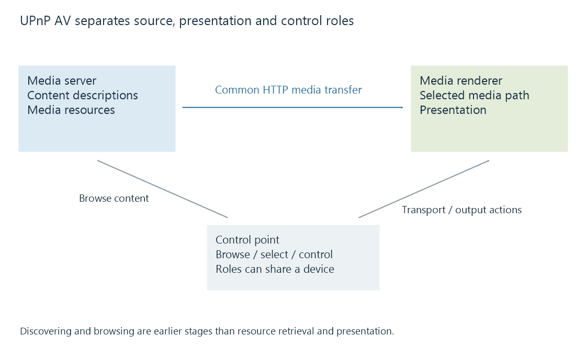

DLNA media playback and UPnP AV roles
DLNA media playback uses interoperable media and UPnP AV roles to discover content, select a renderer and establish a supported media-delivery path.
DLNA media playback combines media-format interoperability with network roles used to discover and control presentation. Its UPnP AV architecture separates the source of content, the presentation device and the controlling application.
A device being discovered establishes part of the network interaction. The selected resource must still fit the renderer's media and access requirements.
Roles can share a physical device
| Role | Main responsibility |
|---|---|
| Media server | Expose content descriptions and media resources |
| Media renderer | Present the selected media |
| Control point | Discover, browse, select and control the relevant devices |
These are logical roles. A television can combine browsing controls and rendering, while another arrangement can use a phone as the control point.

In a common HTTP arrangement, the control point supplies a selected media resource to the renderer's supported transport control, and the renderer retrieves the resource from the server. The controller need not relay every movie byte.
UPnP AV provides named services for those responsibilities, including ContentDirectory, AVTransport, RenderingControl and ConnectionManager. Their presence and supported actions belong to the actual device implementation.
A content description includes resource information
This original selected DIDL-Lite fragment describes one fictional video resource:
<DIDL-Lite xmlns="urn:schemas-upnp-org:metadata-1-0/DIDL-Lite/"
xmlns:dc="http://purl.org/dc/elements/1.1/"
xmlns:upnp="urn:schemas-upnp-org:metadata-1-0/upnp/">
<item id="movie-1" parentID="0" restricted="1">
<dc:title>Harbour Evening</dc:title>
<upnp:class>object.item.videoItem</upnp:class>
<res protocolInfo="http-get:*:video/mp4:*"
duration="00:02:00">https://media.example.invalid/demo.mp4</res>
</item>
</DIDL-Lite>
protocolInfo identifies a transport/network/content-format/additional-information relationship. In this selected example, http-get and video/mp4 describe the offered retrieval and content type; the asterisks are part of the protocol-information syntax.
The description is not the movie's encoded samples. An XML parser accepting it does not prove that the hypothetical MP4 is valid or that its video/audio configuration matches a renderer.
A real DLNA resource can carry additional profile and capability information. The server's device profile can help choose an appropriate offered representation.
Browsing and presentation use different paths
The control point can browse successfully while the renderer cannot reach the named media address. The renderer may also accept the address but reject the encoded configuration.
These observations belong to different stages:
- Device discovery.
- Content-description retrieval.
- Resource and renderer selection.
- Transport/control action handling.
- Media retrieval and presentation.
An Emby server can expose or adapt media for the relevant receiving path where its DLNA integration is available. Direct Stream and video conversion remain stream-operation choices, separate from the discovery mechanism.
One item can offer several media resources
A catalogue item can describe more than one resource for the same content. One resource might carry the original representation while another offers a different compatible representation.
For an original example, assume a two-minute item offers these alternatives:
| Resource | Offered representation |
|---|---|
| A | MP4, H.264/AAC, 5 Mbit/s nominal combined rate |
| B | MP4, H.264/AAC, 2 Mbit/s nominal combined rate |
The item title and catalogue identity remain the same. The selected resource establishes which media bytes and configuration the renderer will receive.
Its content-type label alone does not distinguish the nominal rates or prove support for every encoded configuration. Resource metadata, device capability and actual presentation need to be related to the selected alternative.
An Emby device profile can participate in offering a suitable resource. Keeping item identity and resource choice separate also explains why two successful browses of the same title can lead to different delivered media.
See Also
- DLNA device profiles and declared media constraints
- Playback remote control and reported session state
- Controller and receiver connectivity
- Direct Stream in Emby
- Casting and screen mirroring: where playback happens